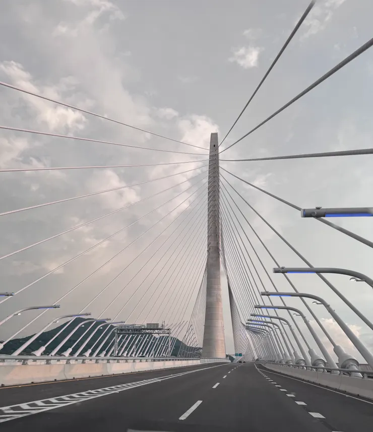
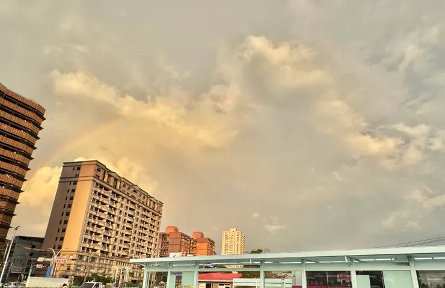
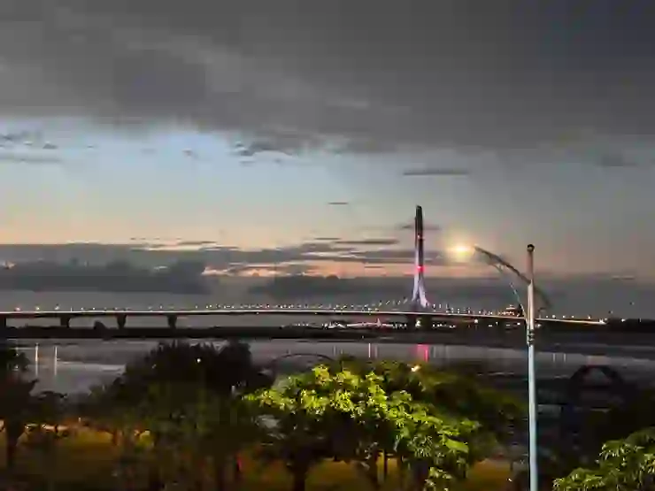

回想這個星期天真的玩得好忙，才在游泳池邊準備上岸，雞爸爸就接到兔姑姑的電話。兔姑姑一家想邀請兔阿嬤和雞爸爸一家，到淡江大橋看夕陽。只是兩姊弟早上才在游泳池玩到筋疲力竭，一聽到還要開拔前往沙崙，雞爸爸難免有點猶豫...結果結局超展開，該看的都看到了，還伴隨著一整路的奇遇...
泳池旁接到兔姑姑手機：「難得今天天氣這麼好，你們先吃午餐，等等再回覆我們。」
雞爸爸上樓吃了愛心午餐，短暫充了一點電，就來問問兔阿嬤的想法，我們之前在淡水已經住快三十年，兔阿嬤也很想看一眼淡江大橋蓋好後的夕陽，於是大家還是決定出發...
一家人開心地跳上車車，搖呀搖地準備前往沙崙，要和兔姑姑一家人會合。
遠方那片黑黑的，到底是什麼？
車子才剛出發不久，雞爸爸就看見遠方天空出現一幅很特別的景象。雲層下方黑白分明，明亮的地方有陽光灑落，黑暗的地方卻霧濛濛的，像是天空被切成了兩半。
鼠媽媽看了一眼，淡定地說：「那個暗暗的地方，應該正在下雨。」
雞爸爸覺得特別，卻也沒有多想，只是隨口跟兔阿嬤開玩笑：「該不會我們千里迢迢跑去沙崙，最後變成是去看彩虹吧？」沒想到，這句話才說完沒多久...莫非是天蠍的第六感...
肯定是你們開太慢，被雲追上了
開上台64線快速道路後，天空突然降下傾盆大雨，還伴隨著隆隆雷聲。雞爸爸趕快打電話給兔姑姑，想確認沙崙那邊是不是也在下雨。奇怪的是，無論是雞爸爸還是兔阿嬤撥出的LINE電話，兔姑姑那邊都沒有聲音。
雞爸爸忍不住笑說：「肯定是那邊也下大雨，不敢接電話，只好假裝手機壞掉。」
又過了五分鐘，電話終於接通。兔姑姑一開口便說：
「哪有！我們這邊晴空萬里、陽光普照，一定是你們開得太慢，被雲追著跑。」
雞爸爸聽完，只好一路向前開。然而不管怎麼前進，外面的雨還是越下越大。那片雨雲彷彿真的認準了雞爸爸家的車子，沿著快速道路一路緊追不放，雞爸爸甚至開始懷疑，這朵雲上是不是有追蹤系統。

看到整個淡江大橋的地面全都是乾的，雞爸爸才相信兔姑姑真的沒有騙我
果然雞爸爸一家到了，雷雨特報也到了 但淡江大橋我還是拍到了
又開了二十多分鐘，雞爸爸一家終於在上淡江大橋前衝出雨雲，車子前面的路面竟然真的都是乾的。停好車後，雞爸爸立刻聯絡兔姑姑，準備討論兩家人要在哪裡會合。
沒想到兔姑姑一接電話就笑了：「你們一停好車，我的手機就跳出雷雨特報了，還打雷。」
雞爸爸聽完真是又好氣又好笑，這雷雨特報是在直播雞爸爸一家的位置嗎？於是雞爸爸家還是帶著雨傘下車，先到旁邊的淡江大橋願景館。鼠媽媽看得很認真，也驚嘆願意堅持當初設計的團隊，多次流標仍願意堅持理想。鼠姊姊則負責收集蓋章，三層樓逛完，還能直接走上淡江大橋的看風景，當大家正準備走上橋欣賞夕陽時，那熟悉的雲也飄了過來...
雞爸爸突然想起，不久前才和鼠媽媽一起看雲去。想不到今天換成雲兒主動來找我們，還一路跟著雞爸爸一家來看淡江大橋。莫非鼠姊姊到哪裡都能交朋友的功力，是遺傳鼠媽媽的嗎？還是這篇應該致敬一下叫：雲兒，讓我們看女孩去～
左邊晴天，右邊下雨 原來這情節不只有在電影裡
雨勢逐漸變大，兔姑姑和雞爸爸兩家人只好先回到車上躲雨。接著，更奇妙的事情發生了。好不容易回到車上，才過了五分鐘，落湯雞爸爸這一側的車窗打開，外面竟已沒有下雨；而陽光兔阿嬤聽到後把她那一側的窗戶打開，雨水卻還在飄進來。
雞爸爸第一次遇見，同一台車，左右兩邊竟然是不同的天氣。
於是雞爸爸往左邊望去，不遠處還掛起一道完整的彩虹；再往右邊看，細雨之中卻同時映著淡江大橋和夕陽。彩虹、夕陽、細雨與大橋，竟然一起出現在眼前。

左側的彩虹，手機拍不出來現場眼睛的感受
看完彩虹後 意外收穫的親子寶藏餐廳
正當大人們忙著欣賞這奇妙的景色，鼠姊姊早上在游泳池充的電，也差不多花光了。大人難得一見的夢幻景色；對六歲的鼠姊姊來說，漂亮的彩虹，比不上一座溜滑梯。
「彩虹充不了電，溜滑梯才可以～」鼠姊姊體力透支開始哭起來，吵著想去玩溜滑梯。
就在雞爸爸還不知道該去哪裡尋找溜滑梯時，兔姑姑迅速找到附近一間設有親子遊戲區的餐廳。大家原本只是想找個地方吃飯、讓孩子稍微休息，沒想到一走進去，竟然有種發現新大陸的感覺。一樓和二樓加起來，竟然擺了六、七台龍弟弟的最愛－可以騎的小車車。
剛才還在車上躲雨的龍弟弟，一看到車車，立刻重新充滿電力。二樓除了車車，還有玩沙區，以及一間可以扮家家酒的小小木屋。鼠姊姊終於找到期待已久的遊戲區，龍弟弟也在車車之間忙得不亦樂乎。
更令人驚喜的是，這裡不只孩子玩得開心，餐點也很好吃。大人可以好好坐下來吃飯，孩子可以在遊戲區開心地榨乾自己最後一點體力。沒想到，原本只是為了躲雨和找溜滑梯，卻又意外收穫一間讓大人、孩子都滿意的親子餐廳。
離開前，兔姑姑和雞爸爸一家已經約定好：「下次一定還要再來一次。」
專屬烏雲追著跑，是為了送來彩虹和寶藏親子餐廳
有時候卡通為了凸顯人物過得很不順，會很誇張的畫一朵專屬烏雲下著雨追著人物跑。
沒想到今天還真的被雞爸爸遇到了，它陪我們上快速道路，帶著我們淋傾盆大雨，甚至一路尾隨我們到了淡江大橋，但雞爸爸並沒有覺得不順。
因為它，一場單純的淡江大橋看夕陽之旅，最後同時遇見雷雨、彩虹、細雨與夕陽；也因為雨天不能在戶外溜滑梯，意外發現一間讓龍弟弟拿著車車捨不得離開的親子餐廳。
幸福沒有劇本，因為生活從來都不會按計畫進行。
沒有安安靜靜地在橋上看完夕陽，卻在車上同時經歷彩虹夕陽晴雨。為了滿足孩子的快樂，大人又開發了一個新的據點。往往就是因為這樣，生活才能變得如此難忘。
雞爸爸隨口說，也許雲兒千里迢迢來沙崙，不是為了看夕陽，不只為了送上彩虹，還有一個約好可以再來的地方。雲兒，這一路被你追著跑，算是值了。這趟路，算是值了。

親子餐廳的夜色，眺望著淡江大橋，雞爸爸一家也收穫滿滿的回憶